V02 versus the high-detail pilot
Drag either model to rotate. Scroll or pinch to zoom. Both use the same neutral material and viewer lighting; no textures are masking the geometry.
Measured geometry, without a quality shortcut
| Component | V02 triangles | V03 triangles |
|---|---|---|
| Central body | 11,998 | 212,792 |
| Standard shroud | 10,000 | 341,726 |
Counts are measured from exported geometry, not requested generation targets. The high-resolution outputs were not subdivided or decimated. Six GLB export/reimport checks passed with exact triangle counts, UVs and zero non-manifold edges after welding export seams.
Central body / close-up comparison
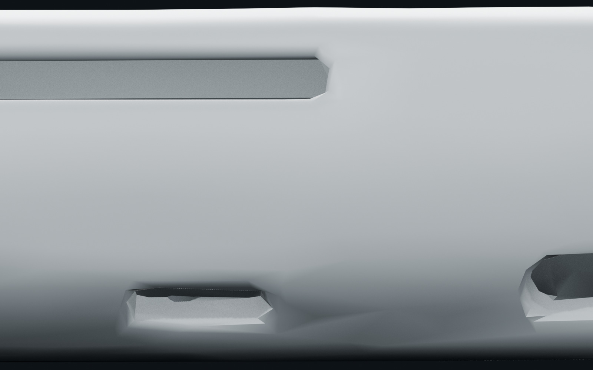
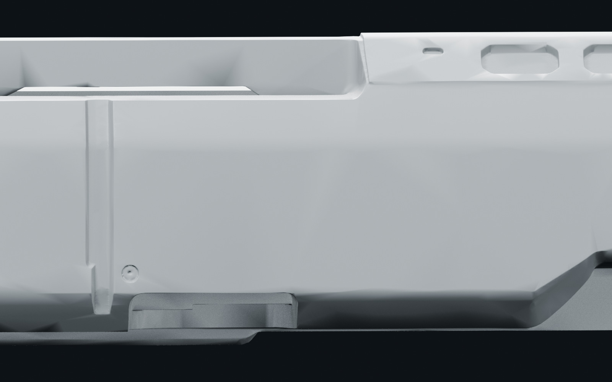
Inspect wireframe density
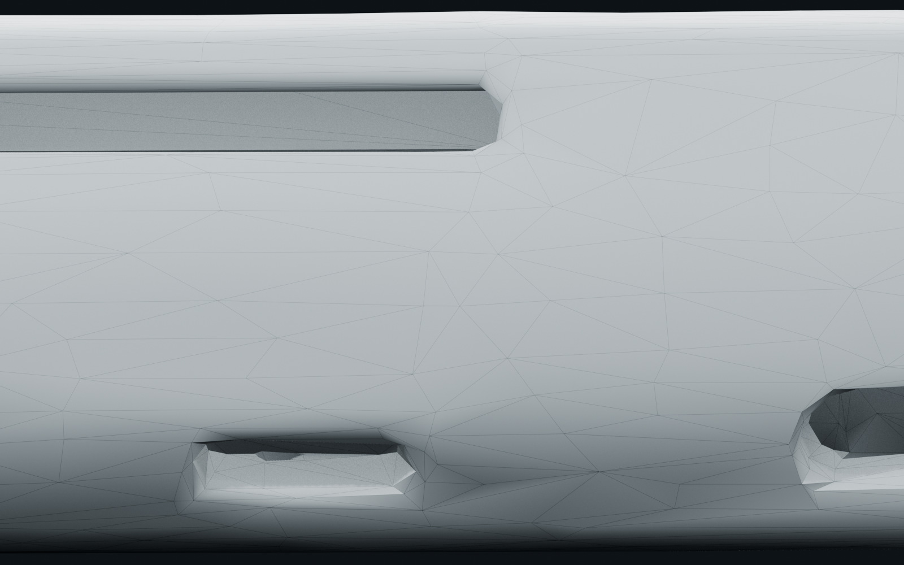
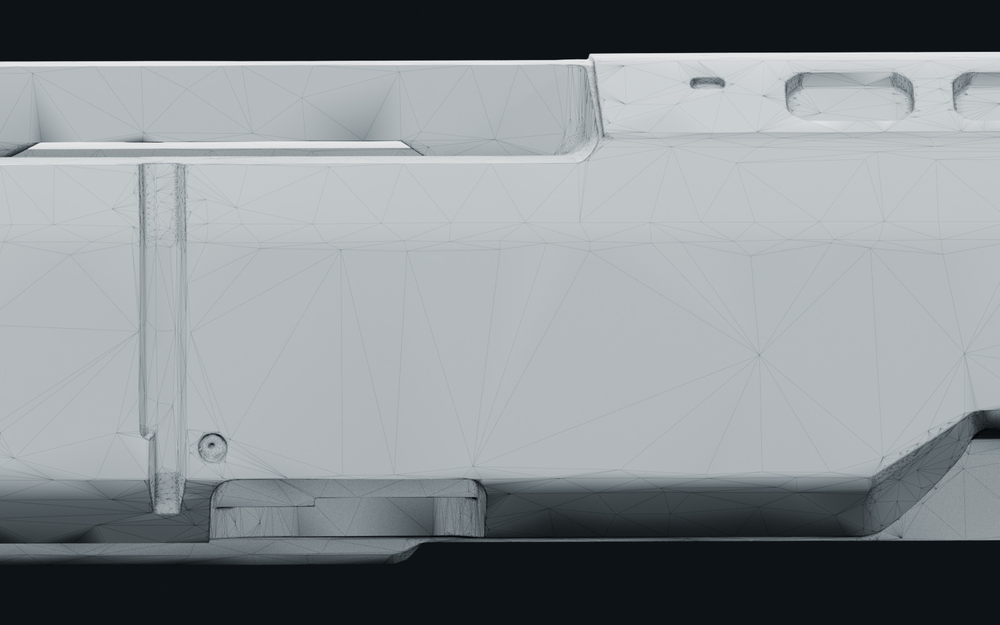
Standard shroud / close-up comparison
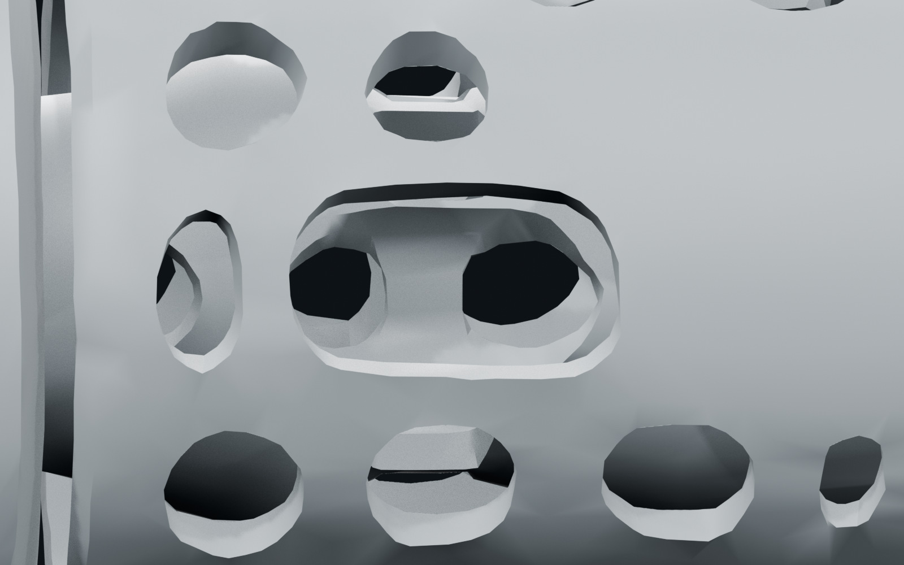
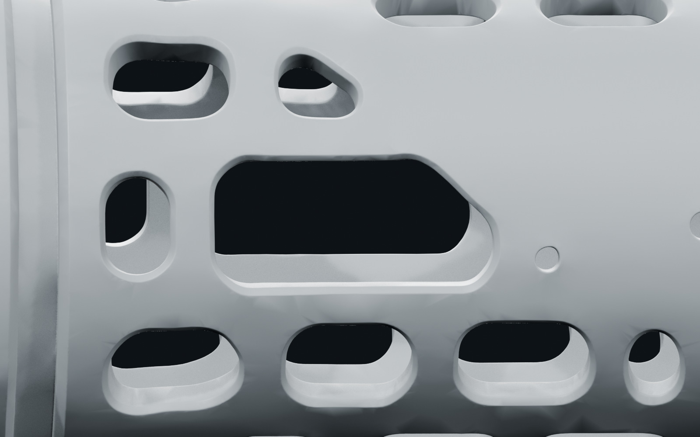
Inspect wireframe density
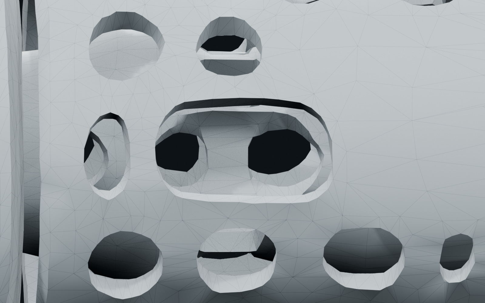
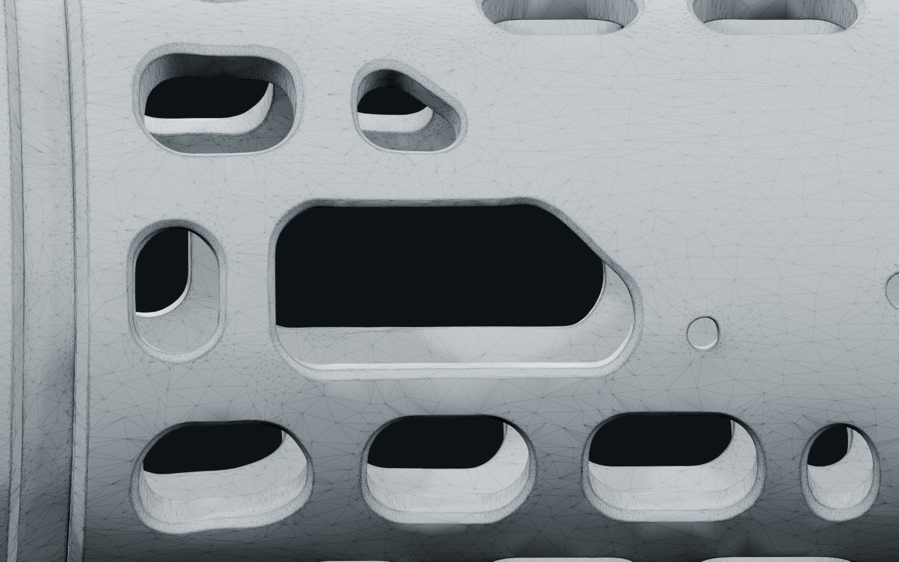
Provisional material direction
Blender procedural marine paint and light surface wear only. These renders are a separate look-development preview, not Substance Painter output, final baked PBR, or evidence of additional modeled detail. The interactive viewers remain plain clay.
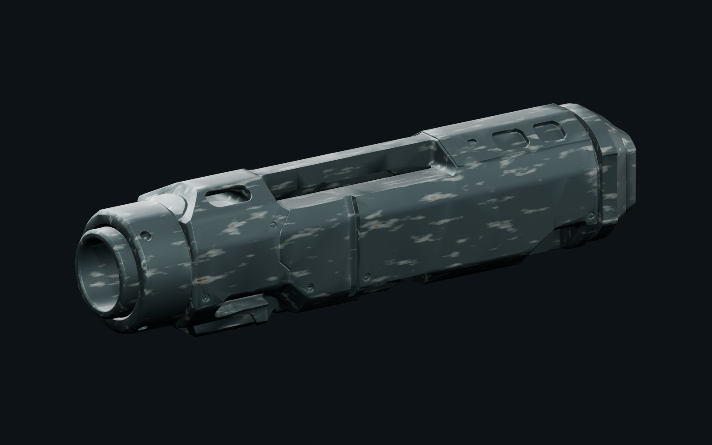
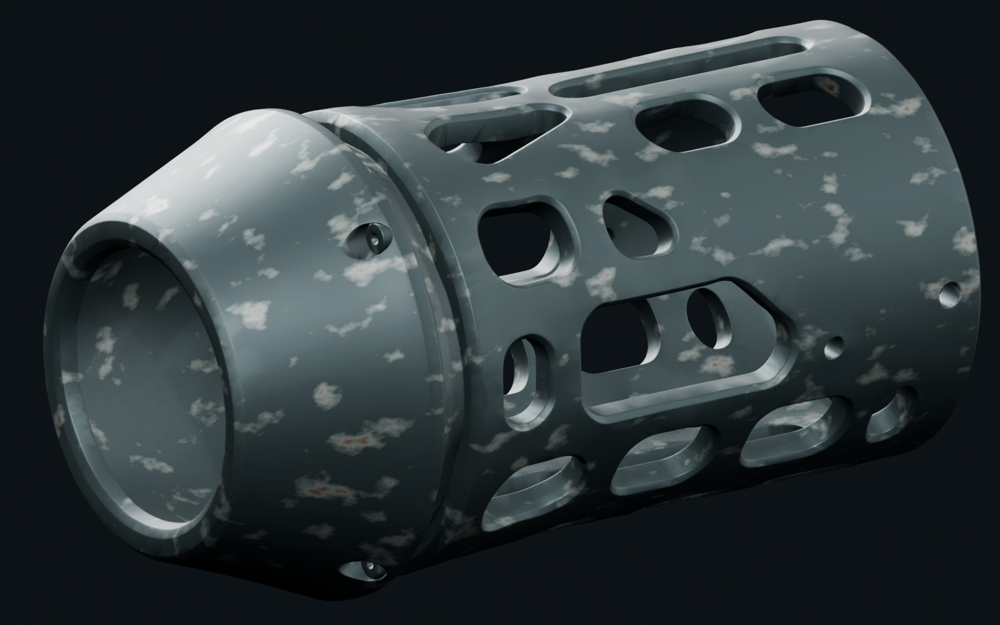
References used for the trial
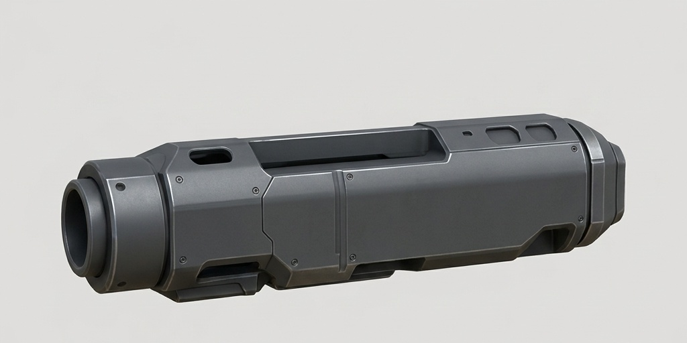
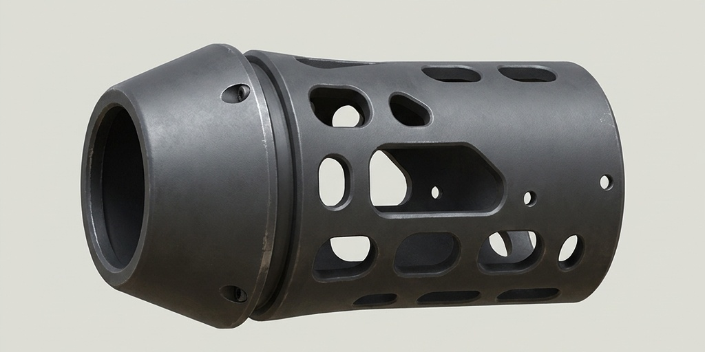
The body used two mutually compatible views. The shroud used only its primary view: the second generated view changed the vent pattern and was excluded. Unseen surfaces are still inferred. This is a combined reference-and-generator pipeline test, not a controlled model-only benchmark.
Review gate
Preserved: V01, V02, both unreduced Meshy source models, Blender source and task provenance. Not run: Rodin comparison, paid add-on installation, Substance Painter, exact-fit/collision checks or Unreal integration. The two-part layout contains a presentation gap, not a certified modular interface.